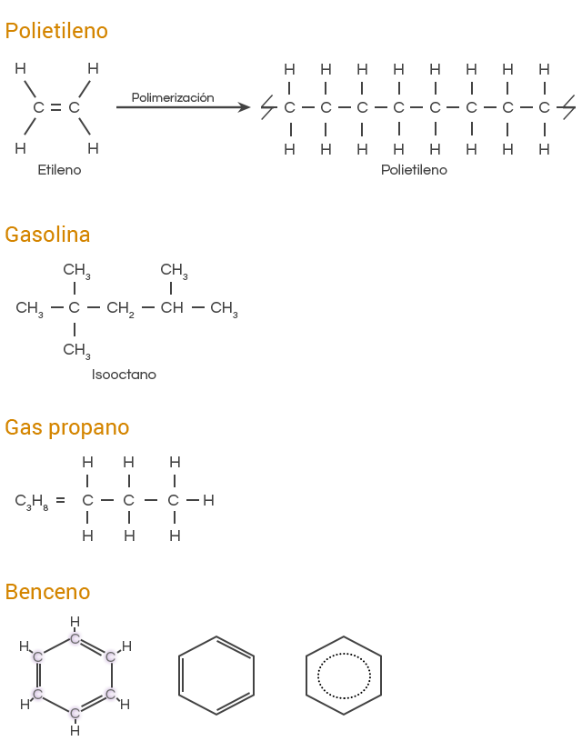

Sesión 2
Inicio
¿Puedo dejar de utilizar los derivados del petróleo y sustituirlos por otros compuestos?
Desarrollo
Da lectura a la siguiente información.
Clasificación del petróleo
Los principales productores son el Reino Unido, Noruega, México, Rusia y Estados Unidos, que es el mayor consumidor. Los países árabes tienen una gran reserva petrolífera, que está en la mira de los países desarrollados.
El petróleo se puede clasificar en:
Realiza la siguiente actividad.

Analiza la gráfica que se presenta a continuación. Pulsa el botón para pasar a la siguiente pantalla y observa la ubicación en el mapa de los países señalados.
Realiza la siguiente actividad.
Exportación: Es cualquier bien o servicio enviado a otra parte del mundo con propósitos comerciales.
Lee detenidamente la siguiente información.
Los tipos de petróleo en México
Casi la mitad de las reservas del petróleo crudo se localizan en el medio oriente. Las compañías petroleras tienen como actividades fundamentales, la exploración, extracción y refinación. La exploración consiste en determinar la ubicación de los yacimientos petroleros, se perfora un pozo exploratorio, parte del material extraído se envía al laboratorio para identificar porosidad, permeabilidad, rastros de petróleo y gas.
En México los tres tipos de petróleo crudo que exporta son:
- Maya
- Istmo
- Olmeca
En México cerca del 88 % de la energía primaria que se consume proviene del petróleo. Llega a nosotros cada día en una gran variedad de formas. Es la principal fuente de insumos para generar energía eléctrica, permite la producción de combustibles para los sectores de transporte e industrial. Además, es materia prima de una gran cantidad de productos como telas, medicinas o variados objetos de plástico, los derivados del petróleo son combustibles y petroquímicos, como:

También son derivados del petróleo los disolventes, asfalto, alquitrán, ceras, parafinas, gas natural entre otros.
La gran demanda de petróleo ha provocado el agotamiento de varios yacimientos, actualmente se siguen explorando en el fondo del mar.
Observa el siguiente video y comenta con tu grupo lo que hayas entendido.
Cierre
Con tu grupo organicen una discusión acerca de la exploración, explotación y extracción del petróleo.